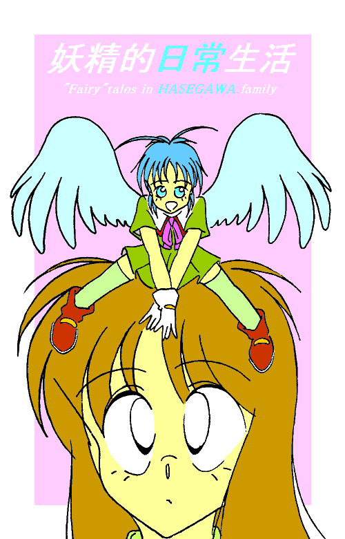
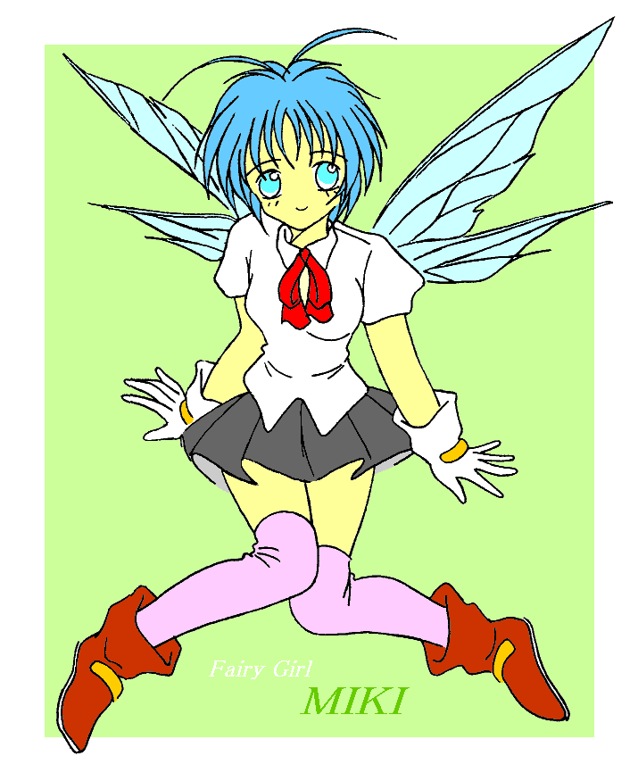
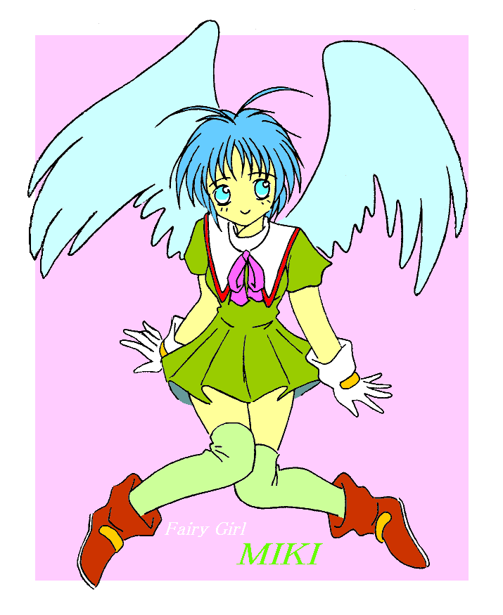

妖精的日常生活
第３話 ももちゃん？
作：ジャージレッド
絵師：ＭＯＮＤＯさん

−−−−−−−−−−−−−−−−−−−−−−−−−−−−−−−−−−−−−−−−−−−−−−−−−−
※ 前回までのあらすじ
異世界の妖精に身体だけ召喚されてしまった突然妖精少女の幹也クンの愛称は、ミキちゃん（ミキ姉ちゃんでも可）に決定！ 今後はそう呼んであげてください。作者からの、お・ね・が・い！ 妖精少女の魅力大爆発の必殺技“すりすり”を開発したミキちゃんは、入れ替わり後の重大イベントであるトイレ問題も無事にクリアしたのだった。（笑） 詳しくは『妖精的日常生活 第２話 すりすり？』までの各話をお読み下さい。<(_ _)>
−−−−−−−−−−−−−−−−−−−−−−−−−−−−−−−−−−−−−−−−−−−−−−−−−−
母さんが朝食の準備をしている間、この時間にしては珍しく長谷川家の家族全員が、台所のテーブルに着席していた。もっとも正確に言えば、母さん以外の４人のうち、文字通りテーブルに着席していたのは、俺１人だけで、残りの３人はテーブルの前に置かれた椅子に着席していたのだが・・・。
この違い、わかるかなぁ？ つまり俺だけは、テーブルの上に敷いた小さなクッションの上に座っていたのだ。こらっ！ そこっ！ 行儀が悪いなんて言うなよな。だって俺が椅子に座るとテーブルは遙か頭の上になっちゃうんだから、しょうがないだろ。
そのテーブルに座った俺は、さっきから、むすぅっ、とした顔でふてくされている。まあ、ついさっき、トイレであんなことがあったばかりだから、無理もないよな。うん、俺は正しい。ふてくされる権利がある。
そんなふてくされている俺を見ていた二歳年下の中学三年生の妹の珠美香が、さも私は関係ございませ〜ん、という顔で俺に話しかけきた。
「どうしたの？ ミキ姉ちゃん。何かいやなことでもあったの？ 駄目よ。一人でうじうじ悩んでいるとストレスになってお肌に悪いわよ。悩み事なら相談にのってあげるから、いつでも話してよね」
まったく珠美香のやつ、しらじらしいったらありゃしない。今回の場合、お前が、悩みそのものだろうが！
「珠美香に話すような悩みなんて・・・ない！」
俺は、ぼそっ、と答えた。もっともぼそっとしゃべっても、その声はあまりにもかわいらしい・・・。
「ほらほらミキちゃん。朝からそんな顔しないの。せっかくのきれいな顔が台無しじゃないの」
朝食の用意をしながら、こちらを振り向いた母さんが、やれやれ困った子ねぇという声で、俺を注意する。
確かに今の俺の顔はきれいだ。それは認める。いや、むしろ今の俺の顔や姿を見て、“きれいだ”又は“かわいい”と思わないような人間がいたら、そのほうが驚きだ。それだけ俺は今の自分のきれいさ、そしてかわいさには自信がある。
ナルシーと笑わば笑え。笑ったやつには天罰が下るであろうというぐらい、きれいでかわいいんだからしょうがない。なんてったって今の俺の身体は、肩にかかるかかからないかの青い髪をした、身長約２５㎝の妖精少女なんだから！ 純白の天使みたいな羽も生えているし、かわいすぎて怖いぐらいなのだ。いや、ホント。
でも、いくらそのかわいい顔が台無しになると言われても、珠美香が先刻、俺に対してしたことを思うと、とても明るい顔なんて出来やしないに決まってるじゃないか！ トイレであんなことされて、ものすっごく恥ずかしかったんだから！！
まあ、世の中にはお金を払ってでもそういうことをして欲しいっていう人もいるみたいだけど、俺は絶対にいやだ！ もうホントに恥ずかしくて、あぁ〜〜、穴があったら入りたい！
「だって珠美香が・・・」
俺はぼそりと抗議した。まるでだだこねっ子だ。しかし意識は１７歳の高校二年生男子だが、今の身体は妖精少女なので、そんな態度もかわいらしく見えるのだろう。さっきから弟の幸也が、俺のことをうるうるした目で見ていることからもそれは間違いない。
ちなみに幸也は、背が低く女顔なところがコンプレックスな、妖精オタクの小学四年生だ。・・・うぅ〜ん。改めてこうして幸也のことを紹介してみたら、何だか将来が不安になってきたな。大丈夫か？ 十年後？
「しょうがないでしょ。スー姉ちゃんだって、悪気があってしたわけじゃないんだし。ミキちゃんがトイレに行きたいっていうのを手伝ってくれただけなんだから、それでいいじゃない」
なかなか俺がまともな返事をしないので、母さんがそう言って俺をたしなめた。
「確かに、トイレに行きたいとか、自分一人じゃ出来ないとか言ったけど、それは珠美香に誘導されて言っちゃっただけで・・・、つまり騙されたというか・・・」
その俺の言葉を聞いて、珠美香が口を挟んできた。
「あら、騙したなんて心外よねぇ〜。純粋に私は、ミキ姉ちゃん一人じゃ、トイレは出来ないだろうと思って手伝ってあげただけじゃない。ふふっ、ちゃんとペーパーで拭いて、後始末もしてあげたしね」
こらっ、また恥ずかしさがぶり返してきたじゃないか！ 何で今そんなことまで・・・！！
「だからそれは言うな！ 俺は今後、トイレは全部自分でやるから、もう手伝いなんかいらない！！」
それを聞いた珠美香は、今朝から定番になっている“じと目”で俺を見ながら、聞き返してきた。
「じゃあどうやってするのよ？ うまくできなくてトイレの床をびちょびちょに汚しちゃうわけにはいかないのよ。手伝いがいらないなら、具体的にこれからはどうするのかを教えてもらいましょうか？」
いっ、いかん！ ここで何とかきちんと答えておかなければ、トイレの度に、珠美香は俺を“手伝う”に違いない。でも、どうすればいいんだ。良い考えが浮かばない。ええいこうなったら！
「もうトイレは使わない。外でする！ 庭でも屋根の上でも、どこででも出来るよ！」
それを聞いた珠美香の顔が、ばかねぇ〜、こいつ、という顔に変化した。いいんだ。バカにされてもトイレを“手伝って”もらうよりは、絶対に良い！！ もう俺はふてくされちゃったよ。
「でもそんなこと言ってもねえ。自覚がまだまだ足りないようだけど、今のお兄ちゃんは、ミキ姉ちゃんと呼ばれる“女の子”なのよ。その点ちゃんと分かってるの？」
珠美香はあくまでも落ち着いて話している。俺は依然ふてくされている。うぅ〜ん。どっちが年長かわかんないぞ。このシチュエーション。妖精少女になってサイズが小さくなってしまった分、心まで子供っぽくというか、幼児っぽくなっちゃったのかな？ だんだんと、“お姉ちゃん”に叱られている“妹”のような気分になってきちゃったよ。やっぱり背の高さというか身体の大きさって精神性に影響するのかな？
「分かったよ！ 珠美香が正しい！ どうせ俺はバカだよ〜だ。い〜だ」
もうやけだ。思いっきりふてくされてやるんだもんね。俺は口を両手の人差し指で思いっきり横に引っ張るとそこから舌をレロレロと出した。ついでにおしりを突き出し腰を曲げ、顔を若干つきだして、珠美香をにらみつけてやった。ふんっだ！
「・・・・・・」
あれ、どうしたんだ。珠美香のやつ、何も言わずにぷるぷる震えてるぞ。・・・やばい。もしかして怒らせちゃったのかな？ どうしよう。怒鳴られないうちに謝っておこうかな。今の身体じゃ、力では絶対かなわないもんな・・・。
「やぁ〜ん。そのポーズ、めっちゃくちゃかわいい〜〜！！」
珠美香は、両手の拳を胸の前でくっつけると、いやんいやんのポーズで上半身を揺らしながら、そう叫んだ。
「へっ？」
俺は毒気を抜かれて、唖然として珠美香を見上げていた。すると珠美香は俺をあっと言う間につかみあげると、自分のほっぺに俺の顔をすりつけて・・・。目を瞑ってため息をつきながら独白した。
「やっぱりミキ姉ちゃんってば、かわいすぎて・・・、あぁ、もう駄目。こんなにもかわいい妖精ちゃんが、庭や屋根の上でおトイレするなんて、そんなはしたないことしていいはずがないわ！」
ああっ、珠美香のやつ。握る力が強すぎるよ。苦しい〜。妖精は華奢なんだよ〜。助けて〜。
「珠美香、珠美香ってば。苦しい。苦しいよ〜。力が強すぎるよ〜。やめて。やめてくれよ〜」
俺がそう言っても、珠美香は自分の言葉に酔っているみたいで、俺の言葉なんか聞いちゃいない様子だ。
「珠美香。幹也が苦しそうにしてるぞ。おい、珠美香！」
見かねて父さんが、珠美香に注意してくれた。ありがとう父さん。
「あっ、ごめんなさい。つい力が入っちゃって・・・。大丈夫だった？」
珠美香は、ようやく自分の世界から戻ってくると、心配そうに俺を見つめた。と言ってもなあ、お前がやったんだぞ。分かってるのか？
「大丈夫？ じゃないよ。もうちょっと優しく扱ってくれよな。今の俺は、赤ん坊よりもちっちゃくて華奢なんだから、もうっ！」
珠美香の手から逃れた俺は、また握りしめられないように、父さんのところまで飛ぶと、左肩に腰掛けた。うん。ここなら大丈夫だろう。ついでにさっきのお礼も込めて、すりすりしちゃった。すると、ちょっと苦い顔をしながら父さんが低くてとても渋い声で話しかけてきた。
「おい、幹也。それに珠美香も、食事前にトイレの話ばかりするのはやめてくれないかな」
んっ、あれれっ、何で父さんの声が、こうも渋くてかっこいい声に聞こえるんだろう。俺の声が妖精特有のキンキン声になっちゃってるからかな？ 人間（？）、自分には無いものにあこがれるって言うもんな…。
「今まで、ばたばたしてて気がつかなかったけれど、こうやってすぐそばで聞いてみると、父さんの声って低くて、とても渋くて、なんだかものすごくカッコイイね。低音が響いてしびれちゃうよ…」
妖精になってから、頭に思い浮かんだことが、すぐに言葉に出てしまうようなんだけど、なんだこりゃ！？
「おいおい、急に何を言い出すんだ？ 幹也？」
「あら、ミキ姉ちゃん。妖精少女になってまだ1日も経っていないのに、もう男に色気を感じるようになっちゃったの？ まったく隅に置けないわよねえ」
ここぞとばかり、珠美香がすぐに飛び付いてきたぞ。まったく・・・。
「なに言ってるんだよ。ただ、妖精の身体で聞くと、父さんの声がかっこよく聞こえるし、低音が小さな身体に響いてしびれるっていう事実を言っているだけだろ、俺は！」
ああっ、自分でも言い訳にしか聞こえない。どうしよう・・・。
「まったく、人夫（ひとおっと）に横恋慕するのはいけないわよ。ミキちゃん。どうせならカッコイイ男の子の妖精と恋をしなさいな」
いつの間にか話に加わってきた母さんが、突然、とんでも無いことを言い出した。ホント、何を言ってるんだよ、母さんってば！
「違うってば！ そういうことじゃないだろ！ ・・・それよりも何だよ？ カッコイイ男の子の妖精と恋をしろだなんて、俺にはそんな趣味はないからね！」
俺の抗議を軽く受け流し、母さんは続けた。
「だって今のミキちゃんは女の子なんだから、恋をするなら相手は男の子でしょ。それに妖精なんだから、やっぱりお相手は、男の子の妖精になるんじゃないかしら？」
「そうよね、母さんの言うとおりよね。ついでに言うなら、早くミキ姉ちゃんが結婚して、子供を産んでくれると嬉しいな。だって“赤ちゃん妖精”を早く見てみたいんだもん。きっとすっごくかわいいわよ」
珠美香まで何を言い出すんだよ〜。俺が結婚して、妖精の赤ちゃんを産むだって〜〜。お前、絶対俺のことをハムスターか何かの小動物のペットと勘違いしてないか？
「だ、だ、だ、誰が赤ちゃんを産むんだよ。冗談もいい加減にしろよな！」
俺は珠美香の言葉を聞いて、頭がパニックになりかけてしまった。どうも妖精になったことに比べたら、女の子になったことなんて何でもないと思っていたけれど、まだまだ女の子になったことに関しては、受けとめきれてはいない部分も多かったようだ。
「でもミキ姉ちゃん。今のお兄ちゃんは、妖精の女の子でミキ姉ちゃんなんだから、しょうがないでしょ。まあどうしても産みたくないんだったら、それでもいいけれど、将来のことは分からないんだから、とりあえず産むかもしれないということで、心と身体の準備はしといたほうが良いわよ」
冷静に理屈を並べて、珠美香が答えた。横で母さんも“うんうん”と頷いている。全くうちの女達ときたら、言うことがやけに古風なんだから・・・。この作品が婦人団体からの抗議で削除されたら、いったいどうするつもりなんだよ・・・。って、何考えているんだ、俺？
「心の準備っていうのは何となく分かるけど、何だよ、身体の準備っていうのは・・・。まさか、やぁらしいことじゃないだろうな？」
そう言いながら俺は、妖精とはいえ、一応、女の子の身体になっているにも関わらず、なぜ、この身体に対して、今まで全然エッチな気分になれないというか、ならないんだろうと、自分をいぶかしんでいた。
−−−−−−−−−−−−−−−−−−−−−−−−−−−−−−−−−−−−−−−−−−−−−−−−−−
※ チェックポイント
ミキちゃんは、なぜ、全然エッチな気分にならないのでしょうか？ この箇所、第１話で言及した、妖精の胸がわずかにしか膨らんでいないことに続いて、とても重要（？）な伏線ですから、アンダーラインを引いておきましょう！ 一応、第４話か第５話で明らかにする予定ですから、それまでの間に予想してみてね。(^o^)
−−−−−−−−−−−−−−−−−−−−−−−−−−−−−−−−−−−−−−−−−−−−−−−−−−
「別に、やぁらしいことなんかじゃないわよ。女の子はね、丈夫で健康な赤ちゃんを産むために、まず自分自身が健康でなくちゃいけないのよ。だからきちんと栄養バランスを考えて食事して、夜更かしもせず、健康に身体を保つ努力をしていなくちゃいけないのよ。なんてったって、これから生まれてくる２人か３人、もしかしてそれ以上の命に対して責任があるんですからね」
珠美香がやけにまじめな顔をしてそう言った。どうしたんだろう。いつもの珠美香の雰囲気と全然違うぞ。
「そうよ、ミキちゃん。妖精とはいえ、今日からあなたも女の子なんだから、そういう覚悟で毎日を過ごしたほうが良いわよ。私が、ミキちゃんというか幹也を産んだ時は、あんまり健康に気をつけていなかったものだから、妊娠中毒になってしまって、それはもう、足はむくむは、血圧は高くなるはで大変だったのよ。だから、それ以来、母さんは健康には気をつけてきたし、珠美香にもきちんと言い聞かせてきたのよ。でもそれだけ気をつけても幸也の時は、早産になってしまったから、ホント、気をつけて気をつけすぎることなんてないのよ」
へえ、母さん、俺を産むときはそんなふうだったのか・・・。
「そうだったよなあ。あのときの母さんは妊娠中毒がひどくて、２週間ぐらいの入院を２回も、したんだったよなあ、確か・・・」
父さんまで、何だかしみじみしちゃってるよ・・・。
「だから今日からはミキちゃんも、今まで以上に健康には気をつけていきましょうね。・・・というわけで健康への第一歩として、しっかりと朝食を取ることにしましょうか？」
確かにテーブルの上にはしっかりと朝食の用意が出来ていた。いや〜、気付かなかったなあ。だって作者ってば、全然、そのことについて描写してくれないんだもん。
−−−−−−−−−−−−−−−−−−−−−−−−−−−−−−−−−−−−−−−−−−−−−−−−−−
※ 作者の言い訳
ごめん、ごめん。だって、そこまで描写していたら、いつまで経っても終わんないからさ、ね！ (^_^;)
−−−−−−−−−−−−−−−−−−−−−−−−−−−−−−−−−−−−−−−−−−−−−−−−−−
「おいしい〜。何でこんなにおいしいんだろ〜！？」
ふわっと焼いたスフレオムレツと、焼きウィンナー。そして日本の朝にはやっぱりみそ汁。それに味付け海苔と白菜の浅漬けという、和洋折衷のいつものなんてことない朝食メニューなのに、いつもよりも、ものすごくおいしくて、俺はつい叫んでしまった。いや、お世辞じゃなくてホントにおいしいんだ、これが・・・。
「でも変ねえ、材料も作り方も、いつもと同じよ。調味料も特に変えていないし・・・。どうしちゃったのかしら？」
母さんはそう言うと、不思議そうに、自分で作った料理を口に入れて首をひねっている。
「でも、でも、何だか今までと全然味が違うよ！ もう、めちゃくちゃおいしいよ！？」
俺は、さっきから興奮しっぱなしだ。妖精の手に持てるような食器がなかったので、とりあえず小さく切ってもらったウィンナーを爪楊枝にさしてもらって、それにかぶりついてみたのだが・・・、もうおいしくて、舌がとろけそうで、至福の味とは、このことかと思っちゃったよ。
「じゃあさ、ミキ姉ちゃん。これを食べてみてよ」
そう言うと、幸也は自分の箸でオムレツを少しつまむと、俺の口の前に差し出した。
「あ〜ん」
食事のおいしさに陶酔していた俺は、ついつい、幼児みたいに、口を“あ〜ん”と開けてしまった。そして幸也が俺の口に入れてくれたスフレオムレツのふわっとした感触が、舌の上に広がった瞬間、俺は我を忘れてしまった。
「はうぅ〜ん。おいしい・・・・・・。ほうぅぅ・・・」
その言葉を最後に、後はため息しか出てこない。人間（？）、本当においしいときには、“おいしい”という言葉以外、何も出てこないのかも・・・。いろいろと形容詞をつけて評論しているうちは、まだまだ余裕があるってことだよね。それに比べて、今の俺は、舌の上の味覚を味わうことだけに、全神経を総動員していて、その他のことには全く余裕が無い状態だった。
−−−−−−−−−−−−−−−−−−−−−−−−−−−−−−−−−−−−−−−−−−−−−−−−−−
※ 作者の懺悔
頻繁に出しゃばってごめんなさい。でも一言だけ言わせて！ 実は私・・・、極度の味音痴なんです！ だから、だから、味の描写が貧弱なのは、それが原因なんです。許して下さい。手抜きじゃないんです。(T_T)
−−−−−−−−−−−−−−−−−−−−−−−−−−−−−−−−−−−−−−−−−−−−−−−−−−
「じゃあさ、ミキ姉ちゃん。今度はこれを飲んでみて。ちゃんと“ふうふう”してあるから熱くないわよ」
珠美香が小さなスプーンにみそ汁をすくって、俺の口元に持ってきてくれた。何だかさっきから幼児扱いされてるような気がするけれど、そのことが気にならないぐらい、俺は食事のおいしさの虜になっていた。
「あ〜ん」
思いっきり大きく口を開けて、珠美香が持ったスプーンから“こくり”とのどを鳴らして、みそ汁を飲んだ俺は、次の瞬間、おいしさのあまり、気が遠くなりそうだった。冗談のように聞こえるかもしれないが、よく効いた“だし”の味に、俺は縄文以来一万年以上続く日本の食文化の神髄を感じ取った気がしたのだ。いや、大げさな言い方だってのは分かっているから、つっこまないように・・・。
「もう、おいしすぎて、涙が出てくる・・・」
俺はとうとう食べながら、感動の涙を流し始めていた。しかし、父さんも母さんも、珠美香も幸也も、全くいつもと変化なしだ。ということは、料理が変わったのではなく、俺の味覚が変わったということなんだろう。
おそらく、この身体の元の持ち主、妖精のエルフィンの普段の食生活は、かなり質素だったに違いない。その質素な食事に慣れたこの妖精の舌に、現代日本の食生活はあまりにも豪華で、美味なのだろう。
そして俺は、はしたないと言われようがなんと言われようが、テーブルの上をかけずりまわり、みんなから食事をもらっては食べていた。
「はい、ミキ姉ちゃん、あ〜ん、して」
「あ〜ん」
幸也のかわいい声につられて、また俺は、口を大きく開けると、白ご飯を口に入れてもらった。なんの変哲もない白ご飯にも関わらず、今の俺には、世界最高の食材を食べているかのような気持ちだった。口の中に広がるほのかな甘みを丹念に味わいながら、あぐあぐと、噛み噛みしている俺の姿を見て、母さんと珠美香が、ため息をつきながら話し合っている。
「ホント、かわいいわよねぇ。これが昨日までのお兄ちゃんだなんて、信じられないわよねぇ」
「そうそう、まるで赤ちゃんに戻ったように、口をめいっぱい開けて、“あ〜ん”しているなんて、かわいすぎて胸が、きゅんっとなっちゃうわね。何だか今のミキちゃんを見ていると、また母乳が出てきちゃいそうな気がするわ」
「なによ、それ？ 母乳って、そんなものなの？」
「そうよ。母乳はね、赤ちゃんの泣き声や、かわいい姿に、まず心が反応して身体に影響を与えるの。難しいことはよく分からないけれど、ホルモンの分泌量が急に変化してね、それでお乳が張ってきて、母乳が出るのよ」
「へえ〜」
「だからね、今のミキちゃん見ていると、あなた達におっぱいをあげていた時の感覚がよみがえってくるようで、何だか、じ〜んときちゃうのよ。まあ、珠美香もあと十年もすれば分かる感覚だけどね。ふふっ、ついでに言うと、おっぱいをあげてるときって、もう言葉には出来ない程、気持ちいいのよ。ぱんぱんに張っていたおっぱいが、赤ちゃんに吸われて、すうっと出ていくのって、経験しないと分からないのよねぇ・・・」
母さんと珠美香の会話を聞きながら、何を勝手なことを言っているんだろうと思いながら、俺は今、味付け海苔を両手で持つと、手や口のまわりがべとべとになるのもかまわず、はぐはぐとぱくついていた。もう、この味付け海苔のやや甘辛い感じが何とも・・・。
「でも、ミキちゃんが女の子の妖精じゃなくて、男の子の妖精になってたら、どうだったのかしら？ やっぱりここまでかわいくなってたのかしら？」
俺を見ながら母さんが、ぽつりと、誰に問うでもなくそう言うと、すかさず幸也が、待ってましたとばかりの勢いで答えた。もしかして、聞かれるのを待ってたな・・・。この妖精オタクは・・・。
「お母さん。確かにミキ姉ちゃんはかわいいけれど、女の子の妖精だからかわいいというわけじゃなくて、女の子の妖精の中でも、“特別にかわいい”というレベルだよ」
「あら、そうなの？ 母さん、妖精のことはあまり詳しくないんだけれど、ミキちゃんってばそんなにもかわいいの？」
母さん。オタクにその専門分野のことを質問しちゃ駄目だよ。絶対、話が長くなるに決まっているのに。俺は白菜の浅漬けを食べながら、二人の会話を聞いていた。ところで珠美香、もう“ごっくん”したから次のをちょうだい。はい“あ〜ん”。
「かわいいなんてもんじゃないよ。顔のかわいさは、見れば分かるよね。それから妖精にもいろいろあるんだけど、一番の特徴は、羽にも色々と種類があることなんだ。一番多いのは昆虫タイプで、その中でもトンボの羽のように長くて薄い、ちょっと透き通った感じの４枚羽根というのが、もっとも多いタイプなんだ。そして次に多いのが、蝶々の羽タイプで、その色や模様には色々な種類があるけれど、形はまるっきり蝶々そのものなんだよ。」
もぐもぐ。ごっくん。ふぅ〜ん。そうだったんだ・・・。じゃあ今度は父さん、はい“あ〜ん”。
「そういった昆虫タイプの羽、中でもトンボタイプが、一番多いから、一般的な妖精のイメージでは、妖精の羽はトンボの羽ってことになっているんだ」
「あら、でも今のミキちゃんみたいに、天使の羽もかわいいけれど、トンボの羽タイプのミキちゃんも結構かわいいかもね」
母さんはそう言いながら、まだまだ食事中の俺のほうをちらっと見ると、ウィンクしてちょっと微笑んだ。いったい母さんてっば、何を考えているんだろう。
トンボ羽タイプのミキちゃん
（ｂｙ喜美香母さんのイメージより）

母さんが何かを考えて黙っていると、また幸也が話し出した。大変だぞう。オタクは全知識をしゃべり切らないと黙ることはないのに・・・。あっ、珠美香。今度はお茶が飲みたいなぁ。はい“あ〜ん”。
「妖精の羽のなかで、一番多いのは、昆虫の羽タイプなんだけど、今言ったようにトンボの羽タイプが１番多くて、２番目に蝶々の羽タイプ。そして少数派として、カブトムシやクワガタみたいな甲虫の羽タイプもいないわけじゃないらしいんだ」
「ふう〜ん。幸也ちゃんって物知りねぇ〜」
母さんも、よく聞いてるよなぁ。・・・ああ、おなかいっぱい。でも、デザートだったらまだ入るかも？
「そして昆虫の羽タイプの次に多いのが、意外なことにコウモリの羽タイプなんだよ。基本的には黒か茶色の羽なんだけど、まれに赤とかピンク色のコウモリの羽タイプの妖精もいるらしいって話なんだ。だいたい昆虫の羽タイプを全体の７割とすると、コウモリの羽タイプが２割、そして最後の１割がミキ姉ちゃんと同じ鳥の羽タイプってわけ」
へえ〜、俺のような羽って珍しいんだぁ〜。
「でも、鳥の羽タイプの妖精にも色々とあって、一番多いのは、ワシやタカのような茶色に少し模様の入った羽なんだよ。そして次に多いのが、ハトの羽のような灰色に模様が入ったタイプで、更にその次が、カラスのような真っ黒い羽をしたタイプなんだ」
「じゃあ、ミキちゃんみたいな真っ白い天使のようなタイプの羽は、珍しいのかしら？」
母さんが、興味津々の声と顔で、幸也に聞くと、待ってましたとばかりに幸也は勢い込んでそれに答えた。そして俺はというと、だらしなくもテーブルの上で大の字になって倒れていた。だって食べ過ぎちゃって苦しいんだもん。大目にみてくれよ〜。
「珍しいなんてもんじゃないよ！ 日本全体で約２万５０００名以上の妖精がいるんだけれど、少なくとも僕が知っている範囲では、鳥の羽タイプで、ここまで純白の羽を持っているのは、もしかするとミキ姉ちゃんだけかもしれないんだよ！ 今まで白い羽といっても、カモメの羽のように先端が黒いとか、ちょっと模様が入っているっていうのは、それなりに確認されているんだけれど、模様も何もまったくない、ここまで純白の天使のような羽を持った妖精の話は、聞いたことがないよ！」
幸也の声には興奮が滲み出ている。それに対して母さんは、落ち着いた雰囲気で幸也に質問した。ところで、２人とも話に夢中になってるのか、ご飯が残っているじゃないか〜。もったいない、おいしいのに・・・。
「でも、ミキちゃんの羽って確かに純白なんだけれど、光の加減なのかしら、飛んでいるときには、髪の毛や目の色と同じように、薄い青色に見えるような見えないような気もするんだけど・・・。これは何なのかしら？」
えっそうだったっけ？ でも母さんも幸也も、早くご飯食べないと冷めちゃうよ。いつまでも話に夢中になってないでさ、早く残りのご飯を食べなよ〜。そしてデザートちょうだい！ なんだか甘いものが欲しい気分なんだよ〜。
「妖精の羽っていうのは、出したりしまったり出来ることでも分かると思うけど、妖精の身体の一部というわけじゃないんだ。実際にはよく分からないんだけれど、あの羽は妖精の魔力が物質化したものなんだって。だから空を飛ぶときには、魔力というか、オーラというか、霊的エネルギーというか、まだ人間にはよく分からないものが羽の表面を覆うことがあるらしくて、その色が見えるんじゃないかな。ちなみにオーラの色も、妖精によって色々な色があって、１番多いのは黄色、２番目が赤、そして３番目が青、最後にまれに緑もあるそうだよ」
「つまり、どういうことかしら・・・」
「つまり、簡単にいうと、ミキ姉ちゃんの羽の基本的な色は純白なんだけれど、空を飛ぶときには、羽の表面がオーラの色である青色に薄く染まることもあるというわけ。これで分かった？」
「う〜ん、分かったような分からないような・・・」
母さんも真剣に悩まなくても良いのに。それよりも・・・。
「ねえ母さん。それに幸也も。もう食事中にそんな長話なんかしてないでさ、早く食べちゃってよ。俺、何だかちょっと甘いものが欲しくなっちゃったんだけど、デザートは何か無いの？」
「えっ、デザートなんか用意してないわよ。・・・それよりも何、その格好は！？ もうだらしが無いんだから。テーブルの上で横になるんじゃありません！ それになんですか？ その大きくふくれちゃったお腹は」
俺の格好を見て、母さんはすぐに俺を叱った。しまった！ ちょっと羽目を外しすぎちゃったかな？
「だっておいしかったんだもん・・・」
何とか許してもらおうと、俺は精一杯、かわいらしいポーズと言い方で、答えた。うぅ〜ん。俺ってば順応性が高いかも・・・。
「いくらおいしいものでも、食べ過ぎは身体に毒です。それにお父さんも珠美香も、駄目でしょ。ちゃんと分量を計算して食べさせなくちゃ。病気になったらどうするの？」
「ごめんなさい。でもミキ姉ちゃんに“あ〜ん”て口を開けられたら、もう何かあげなくちゃいけないような気になっちゃって・・・」
そうだよなあ、俺がかわいすぎるのがいけないんだよなぁ。ふっ、罪作りな俺。
「いやぁ、俺も、幹也が赤ちゃんだった頃のことを思い出してさ、あの頃は仕事が忙しくて、子育てもあまり手伝ってやれなかったろ。だから赤ちゃんみたいに“あ〜ん”て口を開ける幹也を見てたら、こりゃ何かあげてやらんといかんなあ、と思っちゃってな」
「そんなこと言い訳になりません！ それに・・・」
母さんは、そう言った後、まだ何かを言いたそうに黙っている。珍しいな。母さんが口ごもるだなんて。
「「それに・・・、何？」」
父さんと、珠美香が、母さんのほうに身を乗り出して聞いている。俺はテーブルの上に置かれていたクッションに座り直すと、３人の会話を聞いていたが、身体を起こしたとたんに、何だかだんだんとお腹が痛くなってきた。まずい・・・。ホントにこれはちょっと食べ過ぎちゃったかもしれない。
「だ〜か〜ら〜、母さんも〜」
「ミキちゃんにもっと“あ〜ん”ってさせたかったのに〜！！」
そう言えば、母さんには１回しか“あ〜ん”てしなかったっけ・・・。う〜、ますますお腹が痛くなってきたよ。どうしよう。妖精用の胃腸薬なんて無いし、これはやっぱり“アレ”しか無いのか！？
俺は、今後展開されるだろう展開にいやな予感を感じつつ、お腹を押さえながら丸まってしまった。うぅ〜、お腹がごろごろする・・・。や、やばいかも・・・。
「ね、ミキちゃん。・・・ミキちゃん、どうしたの！ うずくまっちゃって！ もしかしてお腹が痛いの？」
母さんが、俺の異常に気付いて、のほほんモードから緊急モードに切り替わった声色で尋ねてきた。
「いや、そんなに心配しないでよ。ちょっとお腹が痛いだけだから・・・。え〜と、食べ過ぎ、かな？」
既にお腹は痛くてたまらない状態だったが、なるべくみんなには平気な振りをしないと、特に珠美香に対しては・・・。さもないとまたアレが・・・。
「食べ過ぎに決まってるでしょ！ とりあえず食べ過ぎてお腹が痛いときの基本。トイレに行きなさい！」
ああっ、母さん、そんな殺生な〜。
「了解！ じゃあミキ姉ちゃん、またスー姉ちゃんが手伝ってあげる！」
珠美香〜、そんな笑顔で言うなよ〜。もうトイレを“手伝って”もらわなくてもいいよ。お願いだからそっとしておいて・・・。
「いやだ！ 珠美香にはもう手伝ってもらいたくない！ 母さん、助けてよ〜。珠美香に何とか言ってやってくれよ。お願いだからさぁ〜」
俺はもう頼れるのは母さんだけという気持ちで、お願いした。すると母さんは予想外のことを言ったのさ。ああ、俺が甘かったよ。俺はこういう運命なんだ・・・。もうっ！
「そうねえ、珠美香。これだけミキちゃんが嫌がってるんだから、珠美香は今回は遠慮しなさい。ミキちゃんのお手伝いは母さんがします。ふふっ、昔を思い出すわねえ。何だか私も若返ったみたい。じゃ、ミキちゃん、行くわよ」
そう言うと母さんは、お腹を抱えて痛がっている俺をつかみあげると、トイレへと向かった。もちろん、俺のトイレを“手伝う”為に・・・。誰でもいいから助けて〜。
−−−−−−−−−−−−−−−−−−−−−−−−−−−−−−−−−−−−−−−−−−−−−−−−−−
※ 作者より一言
ここで、前回のトイレシーンの再現を期待した人、ごめんなさい。私にも描写したくないシーンがあります。トイレシーンは、小まではＯＫですが、大はＮＯです。というわけで、そちらが趣味の方は、ご自分の想像力を鍛えるチャンスです。さあっ、ご自由にどうぞ！！ 想像してるだけなら誰も文句は言いません！！ (>_<)
−−−−−−−−−−−−−−−−−−−−−−−−−−−−−−−−−−−−−−−−−−−−−−−−−−
「も、もう駄目・・・」
俺は、朝食後、既に６回もトイレに行っている。その度に誰かに“手伝って”もらっているのだが、もう既に恥ずかしがる気力も無くなっていた。と、とにかく、誰か何とかして・・・。
「ねえ、ミキ姉ちゃん。まだお腹は治らないの？ 友達と待ち合わせの時間が近づいてきたから、もうそろそろ出かけなくちゃいけないんだけど・・・」
珠美香が時計をチラチラ見ながら俺に問いかけてくる。既に服も着替えて出かける準備はバッチリだ。それなのに俺はまだ、お腹が壊れたままで苦しんでる。腹下りの妖精少女だなんて・・・。ああっ、我ながらカッコ悪すぎ・・・。
「困ったわねえ、どうしようかしら？」
母さんも顔をしかめて考えているが、いいアイディアが出てこないようだ。それをみていた父さんが、ちょっと思いついたんだけど、という雰囲気の顔で、話に加わってきた。何だろう・・・。
「いっそのこと、どうだろう。幹也にオムツをさせてみると良いんじゃないか？」
え〜っ！？ 父さんいきなり何言い出すんだよ。父さんだけは味方だと思っていたのに・・・！
「でも、お父さん。妖精用のオムツなんて無いわよ。下着ですら無いんだから」
そうそう、珠美香も良いこと言うじゃないか。オムツなんて却下、却下。声を出す元気も無い俺は、心の中で相づちを打っていた。
「だけど、オムツそのものは無いけど、代わりになるようなものならあるかもしれないわよ」
かっ、母さん。何考えてるの・・・。まさか、まさか？
「あっ、そうか。アレを使うのね」
珠美香も気がついたみたいだ。どうしよう。いやだよ・・・。
「ねえ、アレって何。何のことなの？」
幸也はまだ良く分かって無いみたいだ。そうだよなあ、まだ小学四年生だもんなあ。
「いいのよ、幸也ちゃんはまだ知らなくても。もう少し大きくなれば分かるから、ね」
母さんはそう言うと、アレを取りに出ていった。ああっ、もう覚悟するしかないのか？ 抵抗する体力も気力も無くなっている俺が可哀想だ。泣いちゃおうかな？ そんな非生産的なことを考えていたら、母さんが戻ってきた。手にはアレを持って・・・。
「ハイ。持ってきたわよ。それときちんと留めるためのガーゼと粘着テープもね」
ちらりと目をやった俺が見たもの。それは予想通り、生理用のナプキン、おそらく薄型だ。やっぱりそうか・・・。がくり・・・。
「珠美香。ミキちゃんをそこに寝かせて。 じゃあ母さんが教えてあげるから、よおく見て、やり方をしっかり覚えるのよ。いい？」
母さんは珠美香にそう言うと、俺の着ているハンカチの服の裾をまくると、下半身をむき出しにして、両足を握ると上に持ち上げ、浮かせたおしりの下に生理用のナプキンを滑り込ませた。
ちなみにナプキンの粘着部分をカバーする紙は剥がされて、ガーゼが当ててあった。なるべくごわごわしないようにとの配慮らしいが、かっ、かっこ悪い・・・。 俺はもうなされるがままだった。
「いい、珠美香。こうしてナプキンの真ん中よりもやや上のところにおしりをおいて、それからナプキンの下の方を上に持ってくるのよ。う〜ん。ちょっとぶかぶかするわね。まあ、小さいよりは良いわよね」
さっきまでは幼児扱いだったけど、もう既に俺は乳児扱いだ。いいんだ。これが妖精少女になってしまった俺の運命なのさ！ でも母さん。どうせなら適当はやめてね・・・。
「で、お母さん。ここをガーゼでくるんでテープで留めるのよね？」
珠美香の声が浮き浮きしている。もう、こんなことで楽しむなよ、お前は！ いっそのこと、手にオシッコでもかけてやろうか？ 怒りでちょっと元気が出てきた俺だった。
「そうそう、あら、やってみたら何とかなるもんね。これなら外出先で催しても、しばらくは何とかなるわよ」
満足、満足とうなずきながら、母さんは珠美香に言葉を続けた。
「それからこのウェットティッシュを持って行きなさい。出ちゃって、おしりが汚れたらこれできれいに拭いてからナプキンを代えないと、炎症になっちゃうからね。特に“ももちゃん”は綺麗にするのよ」
「えっ、“ももちゃん”って何？」
珠美香がきょとんとして、母さんに聞いている。
「ほら、小さな女の子のアソコのことよ。赤ちゃんの頃のアソコって、桃みたいでしょ。だから“ももちゃん”って言うのよ。・・・でもこう言うのは母さんの実家だけなのかしら。他の人が言うのをあまり聞いたことはないわね」
「なるほど、“ももちゃん”ね。言われて見ればそうよね。ミキ姉ちゃんって、大きさはともかく見た目は１６か１７歳ぐらいに見えるのに、アソコだけは何だか赤ちゃんみたいだから、“ももちゃん”って言い方が似合ってるわよね」
ニヤニヤとしながら、珠美香が妙に納得した表情で俺を見ている。
「とにかく、男の子と違って、女の子の場合、ゆるいウンチが出ちゃうと、“ももちゃん”の間に入り込んじゃって大変だから、きちんと拭いてあげてね。敏感なところだからもしかすると嫌がるかもしれないけれどね」
「そうよねえ。敏感だもんねぇ」
しみじみと答える珠美香、そして・・・。
「「・・・・・・ぷっ、あはは〜っ、くっくっくっ」」
母娘ふたりで、意味深な目で俺を見つめていた母さんと珠美香は、しばらく黙っていたかと思うと、同時に吹き出して押さえた笑い声をあげた。くそう、何考えてるんだよ。２人とも・・・。
−−−−−−−−−−−−−−−−−−−−−−−−−−−−−−−−−−−−−−−−−−−−−−−−−−
※ 作者より一言
世の中の新米お父さん。もしも、自分の子供が女の子だったら、積極的にオムツ替えを手伝った方が良いよ。自分の娘のあんなところをじっくりと見る機会は、その後そうそうあるもんじゃ無いからね・・・。あっ、歳がばれたかな？ まっいっか。(^_^;)
−−−−−−−−−−−−−−−−−−−−−−−−−−−−−−−−−−−−−−−−−−−−−−−−−−
「いってきまーす」
「いって、きま〜す・・・」
珠美香の元気いっぱいの声に続いて、俺の元気のない声が玄関に響いた。そして俺達は珠美香が友達と待ち合わせているという私鉄の駅に向かった。ちなみに俺は空を飛ぶ元気も無くしていたので、珠美香に抱きかかえられている。でもこれって、柔らかい胸の感触に包まれて、気持ちいいんだよね。眠くなっちゃいそう。
「ねえ、ミキ姉ちゃん。どんな服を買おうか？」
珠美香の問いかけに、俺はどう答えて良いのかよく分からなかった。だって女の子の服、それも妖精の服なんてよく分からないし、答えようがないんだもん。
「うぅ〜ん。よく分からないよなぁ。まず、どんな服があるのかさっぱりだし・・・。でもこのハンカチの服よりまともな服だったら、もう何でも良いって気分だけどね」
「そうよねえ。まずは見てみないことには分からないわよね。でも妖精になっちゃっても、やっぱり学校には行くんでしょ？」
珠美香の問いかけに、ちょっと意表をつかれた。そこまで考えていなかったよ。でも確かに学校には行っておいた方が良いかも・・・。もしかして、元に戻れるかもしれないし・・・。
「うん、学校には行っておいた方が良いかな」
俺の答えを聞くと、珠美香は考え考え、こう言った。
「じゃあさ、ミキ姉ちゃんの高校の女子の制服ってどんな服なの？ セーラー服、それともブレザー？」
「ブレザーだけど・・・」
俺は答えながら、今更ながら俺が妖精とはいえ女の子になっていることを再確認した。そうかぁ〜、買うとしたら女子の制服なんだよなぁ〜。
「ブレザーねえ〜。妖精少女にはちょっと合わないかもねえ〜。どうせならもっと可愛いのがいいなあ。ほら、Ｓ女学院、あの、お嬢様学校の制服、アレなんか良いんじゃない？」
そう言いながら珠美香は、ちょっと遠い目をした。どうせ俺にその制服を着せたところでも想像しているんだろうな。何だか、デパートでは着せ替え人形にでもされちゃうんじゃないかな、俺・・・？
お嬢様学校の制服を着たミキちゃん
（ｂｙ珠美香ちゃんのイメージより）

２人でそんなことを話しながら歩いていると、駅が近づいてきた。通りには人が多くなり、中には俺に気がついて、こっちを指さしながらひそひそとやってる人たちもいる。
「珠美香〜。みんな俺を見てるよ〜。めちゃめちゃ恥ずかしい・・・」
俺は、珠美香の腕にの中で、蚊の泣くような声で、珠美香に訴えた。
「しょうがないでしょ。このあたりじゃ妖精なんて珍しいんだもん。それにミキ姉ちゃんってば、誰から見てもかわいいし・・・。それに幸也が言ってたじゃない。天使の羽のような妖精は、もっと珍しいって・・・。注目されないほうがおかしいわよ。さらわれちゃわないように注意しなくちゃね」
珠美香の何気ない言葉で、俺は今更ながらに気付いてしまった。今の俺ってば、さらわれちゃうぐらいかわいいんだ・・・。どうしよう、さらわれちゃったら・・・。ぶるるっ、何だか震えちゃったよ。
「ふふっ、震えちゃって、ますますか〜わゆい。いいでちゅか〜。お菓子をくれるって言われても、知らない人について行っちゃ駄目でちゅよ〜」
珠美香は、からかい口調で俺にそう言ったが、俺はその言葉を真剣に受け止めてしまった。だってまわりの人間って、今の俺から見たら文字通りの巨人ばかりで、何だか怖いんだもん。珠美香の腕にぎゅっと、しがみついてしまった俺であった・・・。
−−−−−−−−−−−−−−−−−−−−−−−−−−−−−−−−−−−−−−−−−−−−−−−−−−
「やほー、江梨子、早苗。ごめんごめん、待った？」
俺達が駅に着くと、既に珠美香の友達が２人、待っていた。
「おっそおーい。１５分の遅刻。今日はＴデパートの夏物セールの初日だから、開店前から並ぼうって言い出したのは珠美香じゃないの！ いつもは遅い早苗ですら時間前には来てたのに！ ・・・！？」
「あ〜、江梨子ちゃん、ひどお〜い。その言い方じゃ、私はいつも遅刻ばっかりしてるみたいじゃないの。ねえ、珠美香ちゃん・・・。えっ・・・！？」
あっ、気付かれちゃったかな・・・。
「え〜っ、何それ？ もしかして本物の妖精！！」
「きゃ〜、かわいい。どうしたの、どうしたの？」
２人とも、俺に気がついたとたんに、珠美香が遅刻したということは、もはやどうでも良くなったらしい。興味丸出しで２人の女の子、江梨子ちゃんと早苗ちゃんが、俺をまじまじと見ながら、珠美香と話している。でももうちょっと小さな声で話してくれないかな？ 何だかまわりの注目を浴びてるし・・・。恥ずかしい・・・。
「いやあ、驚いたでしょ。私もびっくりしちゃったけど、この妖精、昨日までは私のお兄ちゃんでした〜」
珠美香、そんなに楽しそうに紹介するなよ〜。
「え〜と、初めまして。珠美香の兄の幹也です。妹がいつもお世話になっています」
とりあえず俺は無難に挨拶をしておいた。すると珠美香がすかさず訂正を入れてきた。
「もう兄じゃないでしょ。見てのとおり、女の子の妖精になってるから、今朝からはミキ姉ちゃんと家族には呼ばれてるの。どう、かわいいでしょ？」
「いいな〜、いいな〜。私も妖精の家族が欲しい」
早苗ちゃん。欲しいって言われても・・・。
「でも、珍しいな。鳥の羽タイプで、真っ白な羽なんて」
「あら、江梨子ちゃん。分かるの？ 実際その通りらしいんだけど・・・」
３人はその後しばらく、俺を話題にして盛り上がっていたが、俺はというと、実は会話を聞いたり加わったりする状態じゃなくなっていた。緊急事態が発生していたのだよ・・・。 何が言いたいのかは分かるよね。そう、アレだよ・・・。
もしかして脱水症状になるといけないということで、出がけに母さんが、スポーツドリンクを飲ませてくれたんだけど、つい飲み過ぎちゃったのがまずかったのかな？ だって口当たりがやけに良かったし、甘くておいしかったんだもん・・・。
「珠美香・・・。珠美香・・・。ちょっと・・・」
俺の小さな声にようやく気がついた珠美香は、何？ という顔でこちらを見ると、声を潜めて聞いてきた。
「何、もしかしてまた出ちゃったの？」
「うん、出ちゃった。どうしよう・・・」
俺は、これ以上は無いというぐらい情けない声で返事をした。ホント情けない・・・。
「出ちゃったもんはしょうがないでしょ。じゃあトイレでオムツの交換といきますか？」
俺と珠美香がひそひそ話をしているのに気がついた江梨子ちゃんと早苗ちゃんは、こちらの話が終わったのを見計らって話しかけてきた。気付かなくても良いのに・・・。
「珠美香、何かあったの？」
「どうしたの珠美香ちゃん？」
すると２人の耳元で珠美香が、ひそひそと答えちゃった！！ 答えるなよ〜、珠美香〜！！
「私もやりたーい。いいでしょ。いいでしょ」
すかさず満面の笑顔で主張する早苗ちゃん。そして・・・。
「うん、私もやってみたいな。こんな機会は滅多にないし」
冷静な口調ながらも興味津々の雰囲気を漂わせて、江梨子ちゃんも言い切った。
「じゃあ、３人で一緒に換えましょうか？」
珠美香がにこりと微笑みながら２人に返事をする。おいおい、珠美香、ねえ、俺の意見は？ ねえってば！？
「珠美香、恥ずかしいから、珠美香一人でやってよ。おとなしくしてるからさ〜。お願い！！」
「なに今更恥ずかしがってるのよ。それに昨日まではともかく、今は女同士。何にも問題ないでしょ。ね、江梨子ちゃん。早苗ちゃん。そうでしょ？」
珠美香は２人の友達に同意を求めると、同時にウィンクで合図をした。くそう、見えてるぞ。
「問題ありませ〜ん」
「ぜんぜん大丈夫で〜す」
２人の返事を聞くと、珠美香は俺を抱いたまま、駅の女子トイレへと入っていった。もちろん江梨子ちゃんと早苗ちゃんも一緒だ。うぅ〜。
「お前ら、お前ら、絶対、絶対、変態だ〜！！」
その日、某私鉄の某駅、女子トイレにて、とってもかわいらしい妖精が、変態中学生の女の子３人を、口汚くののしる光景が多くの人に目撃された。６月も末の日曜日の朝のことだった・・・。（泣）
−−−−−−−−−−−−−−−−−−−−−−−−−−−−−−−−−−−−−−−−−−−−−−−−−−
※ 作者より皆様へ
よ、ようやく第１話の冒頭から計算して、１２時間が経過しました。妖精的日常生活という題名の通りにする為には、最低でも１日を経過させないとまずいのに・・・。先は長いです。それから、第３話を描いている最中、もしかして第２話に比べてテンション落ちているかな〜と、心配だったのですが、あらためて読み直してみると、これはこれで結構おもしろいじゃないか、と自画自賛しちゃいました。・・・許して。苦情、おしかり等は、いつでも受け付けます。最後になりましたが、素敵なイラストを描いていただきましてありがとうございました。ＭＯＮＤＯ様には大変感謝しております。こんなつたない文章にはもったいのうございます。m(_ _)m それでは今度は第４話でお会いいたしましょう。(^_^)/~
−−−−−−−−−−−−−−−−−−−−−−−−−−−−−−−−−−−−−−−−−−−−−−−−−−
※匿名・仮名で構いません。
※書き込み後は、ブラウザの「戻る」ボタンで戻って下さい。